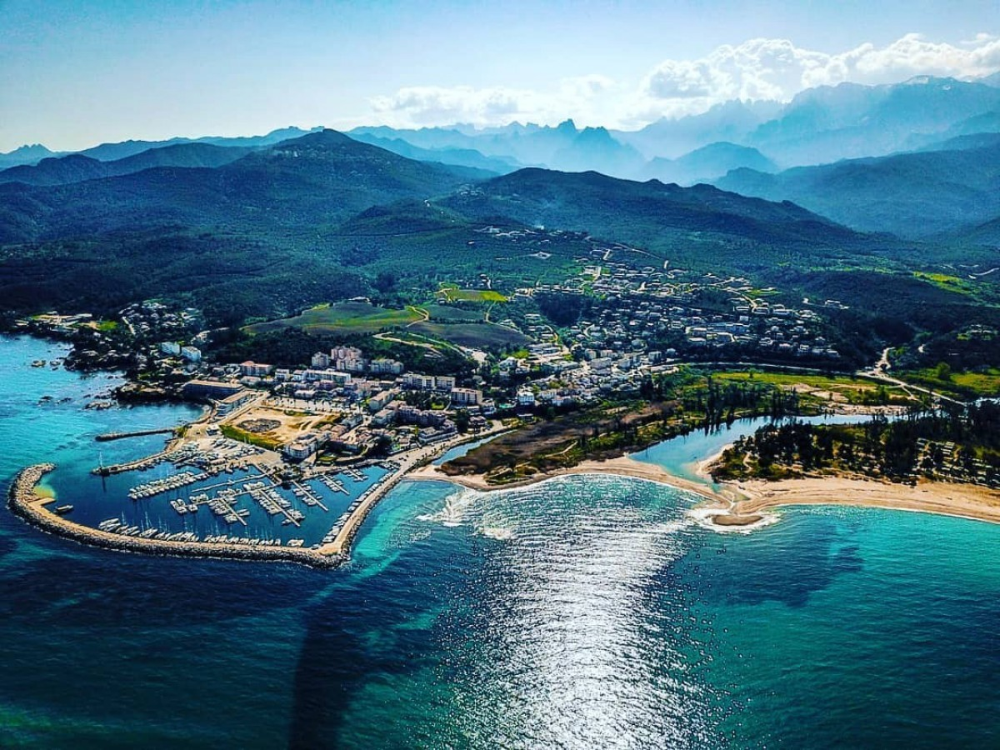

Solenzara tengerparti arculatának abszolút fókuszpontja a modern és elegáns vitorlás kikötő, amely sajátos, kozmopolita, mégis végtelenül laza mediterrán atmoszférát kölcsönöz a településnek. A pálmafákkal szegélyezett mólók mellett ringatózó jachtok látványa, a sós tengeri levegő és a teraszok moraja egy olyan hívogató teret alkotnak, amely tökéletes helyszínt biztosít az utazás ritmusának lelassítására. Különösen az alkonyati órákban érdemes itt elidőzni, amikor a lemenő nap aranyfénybe vonja a vizet, a vándor pedig a kikötő híres, ikonikus kézműves jégkrémeit kóstolva olvadhat bele abba a selymes, hömpölygő és gondtalan esti korzóba, amely a korzikai nyár egyik legmaradandóbb életérzése.
Földrajzi és utazásszervezési szempontból Solenzara kulcsfontosságú bázis, hiszen a város északi szélén ágazik le a T10-es part menti főútról az a merész hegyi út, amely egyenesen a sziget legdrámaibb hágójához, az Aiguilles de Bavella csipkés gránitcsúcsaihoz vezet. Ez a pont jelöli a határt a végtelen horizontú tengerparti síkság és a zárt, függőleges sziklabirodalom között. Mivel a főszezon heteiben a tengerparti forgalom és a hegyekbe tartó túrázók tömege a belvárosban koncentrálódik, a parkolás komolyabb figyelmet és türelmet igényel, ám a település kiváló infrastruktúrája és tágas elrendezése ideálissá teszi a helyszínt a készletek feltöltésére, mielőtt a sofőr bevenné magát a vad és kanyargós szerpentinek közé.
Ahogy elhagyjuk a kikötő nyüzsgő világát és elindulunk a szárazföld belseje felé, a táj azonnal vadregényes, érintetlen arcát mutatja, ahogy a Solenzara folyó és a híres Fiumicelli-völgy mély szurdokai kísérik az utat. A part menti buja, örökzöld makkiflóra illata itt keveredik a hegyi fenyvesek hűvösével, a mederben pedig smaragdzöld, kristálytiszta vizű természetes sziklamedencék láncolata hívogatja a frissítőre vágyó utazót. Ez a közvetlen átmenet a sós tengeri hullámoktól a hegyi patakok selymes édesvízéig hűen mintázza Korzika egyedülálló karakterét, ahol alig néhány kilométeren belül a mediterrán strandolás élménye és a vadregényes magashegyi kanyonok világa maradéktalanul eggyé válik.